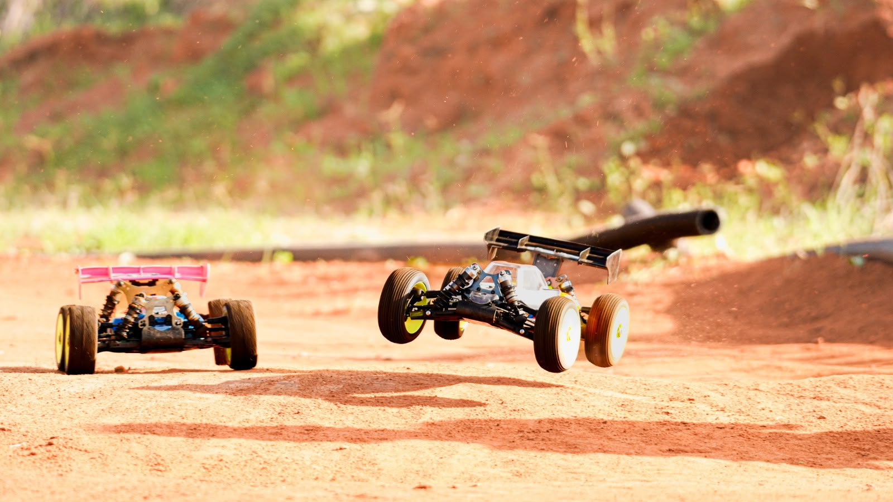
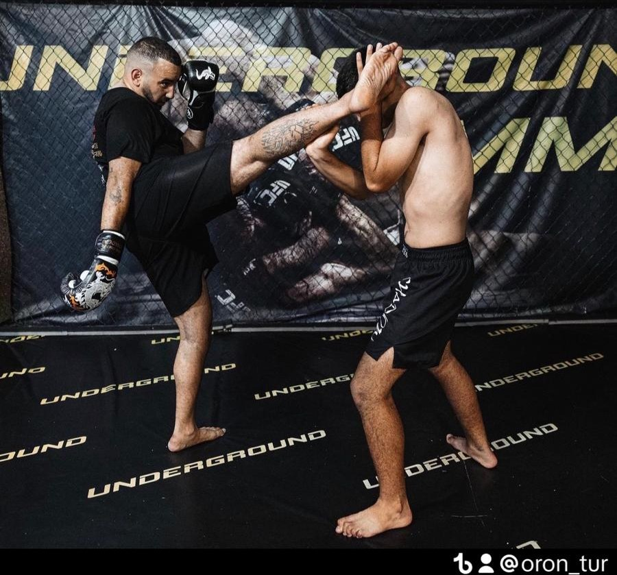
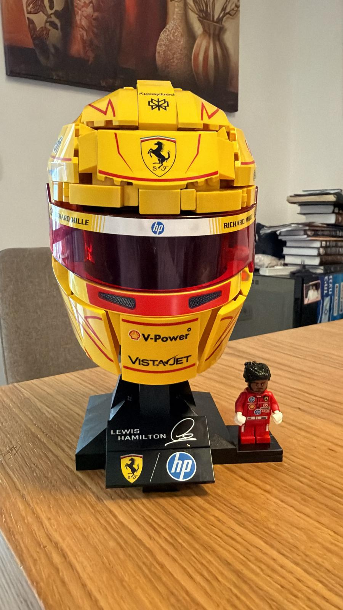
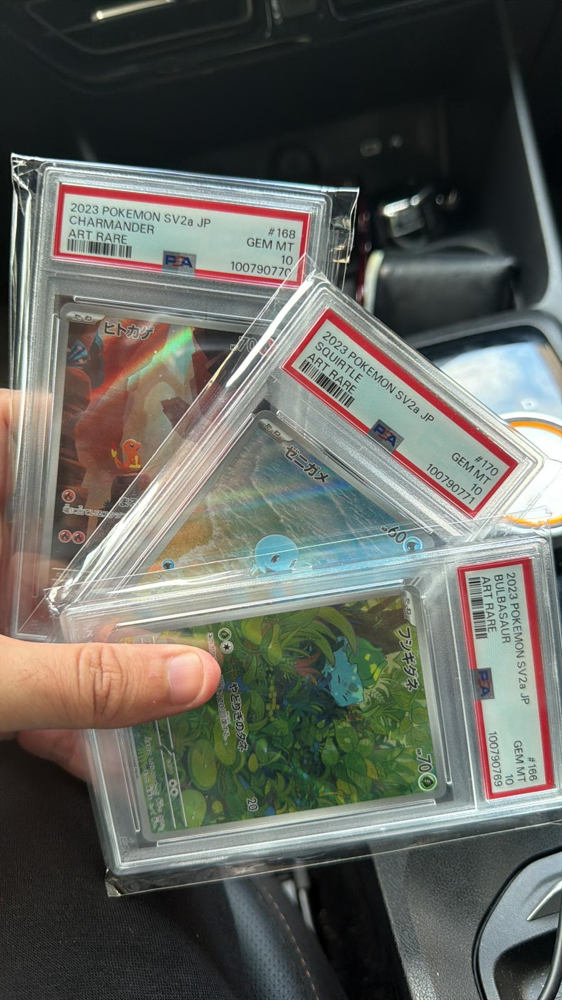
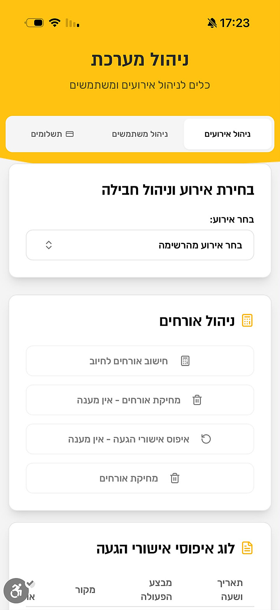
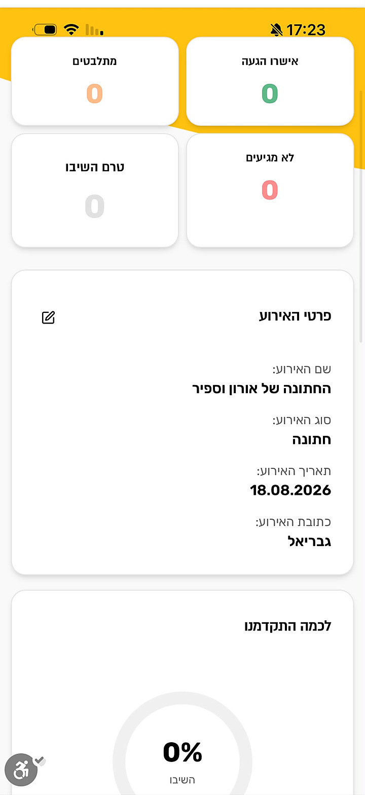

About me
Product & Project Manager — Strategy-led, UX-driven
I manage products and projects the way a small founding team would — only it's one person. An advertising & project-management background, a strategist's cross-view of market, product and user, and the range to take an idea from characterization all the way to a shipped, real product — two of my products are live and working in the market.
Beyond the screen
Before the work talk — the things that keep me sharp, competitive and curious.




My story
Leading advertising projects — briefs, cross-functional teams, budgets, deadlines, and turning business goals into measurable results — is the same discipline as product & project management in tech. I simply swapped campaigns for products.
I come from a background in marketing, advertising, and business strategy, where I spent several years leading projects, managing client relationships, coordinating cross-functional teams, and transforming business goals into measurable results.
My transition into UX/UI was a natural evolution driven by a passion for understanding people, solving complex problems, and creating digital experiences that are both intuitive and impactful. I believe that great products are built by deeply understanding users, identifying their pain points, and aligning business objectives with thoughtful design and technology.
I enjoy working at the intersection of product, design, and technology. Whether it's conducting user research, defining product requirements, mapping user flows, or collaborating with designers and developers, I thrive on turning ideas into products that deliver real value.
As an entrepreneur, I have gained hands-on experience building and improving digital products, optimizing business processes, and leveraging AI, automation, and no-code technologies to solve real-world challenges. This experience has given me a strong product mindset — one that balances user needs, business strategy, technical feasibility, and execution.
I'm looking to contribute as a Product Manager or Project Manager in a UX-driven environment, where I can combine strategic thinking, product discovery, user-centered problem solving, and cross-functional collaboration to help build meaningful digital products that make a lasting impact.
What I bring
The reason I can take something from 0 to 100 is that I don't hand off between the parts. They're all mine.
Framing the real problem before touching a screen — user research, interviews, and the “why” behind the build.
Years of marketing and project management on multimillion-shekel campaigns — I design with launch and adoption in mind.
Translating strategy into product requirements, user flows and buildable UI — the “what to build and why,” not just how it looks.
I prototype and ship real, working software fast using AI tools — Claude Code, Lovable, and more — not just mockups.
Two live products in the market — one in the App Store with paying subscribers — taken to market with paid campaigns and iterated on real user feedback.
The thread that ties research, decisions and screens into something a stakeholder — or a user — actually gets.
Meashrim in Click (מאשרים בקליק) is a live iOS app for event RSVP & seating — in the App Store with paying subscribers. MyPlanner is my second working product, a wedding-planning system in real use. I owned both end-to-end — reading the market, characterizing the product (spec), defining what to build for the user, and solving the real problem — then built, launched and marketed them myself. It's proof I manage product characterization and delivery from the inside, with a strategist's cross-view — not just a pretty screen.


Let's talk
I'm open to product design & project management roles. Whether it's a concept or a launch — I'd love to hear about it.